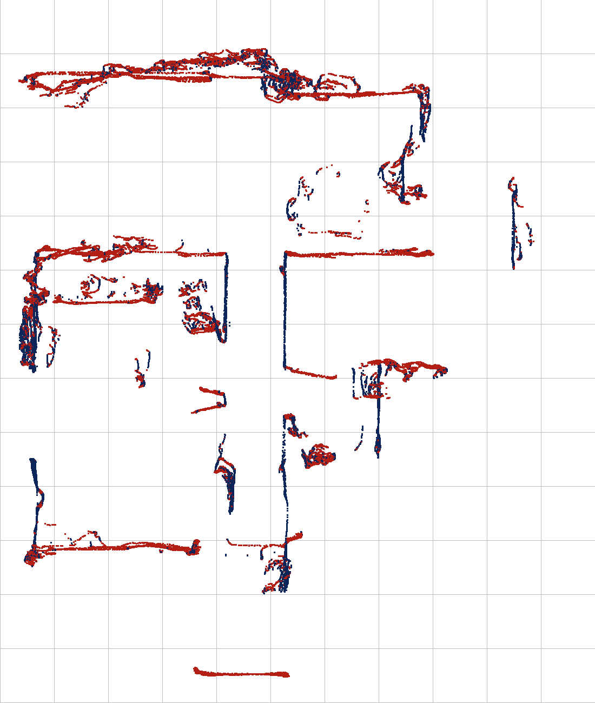
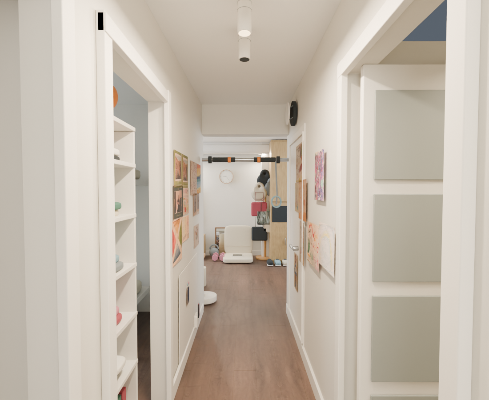
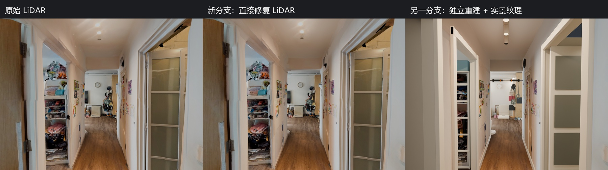
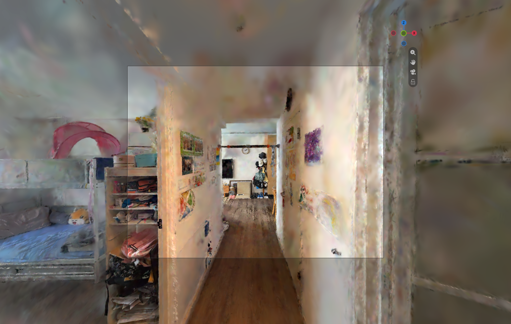
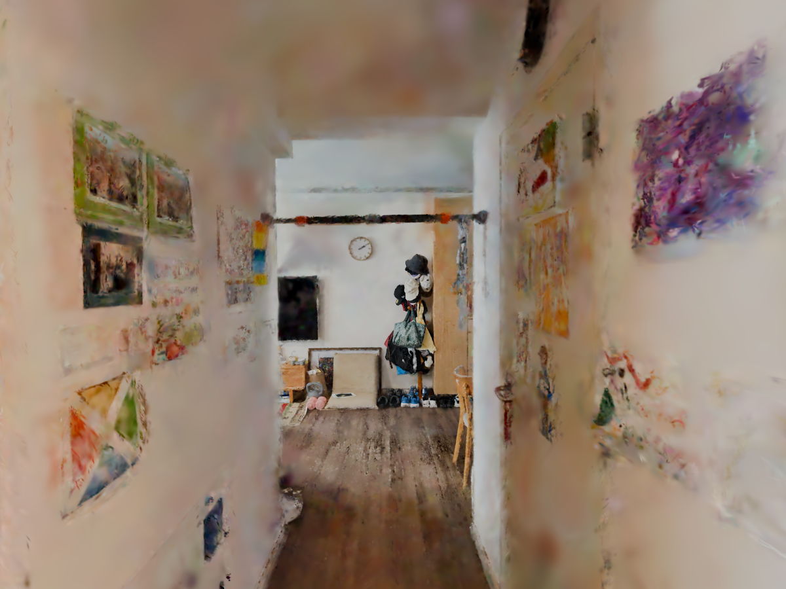
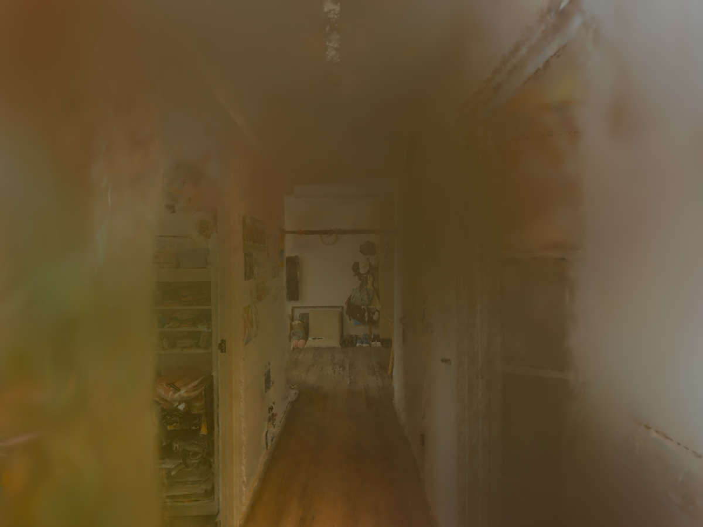
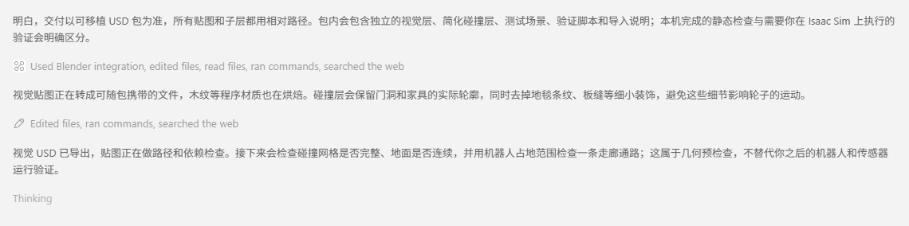
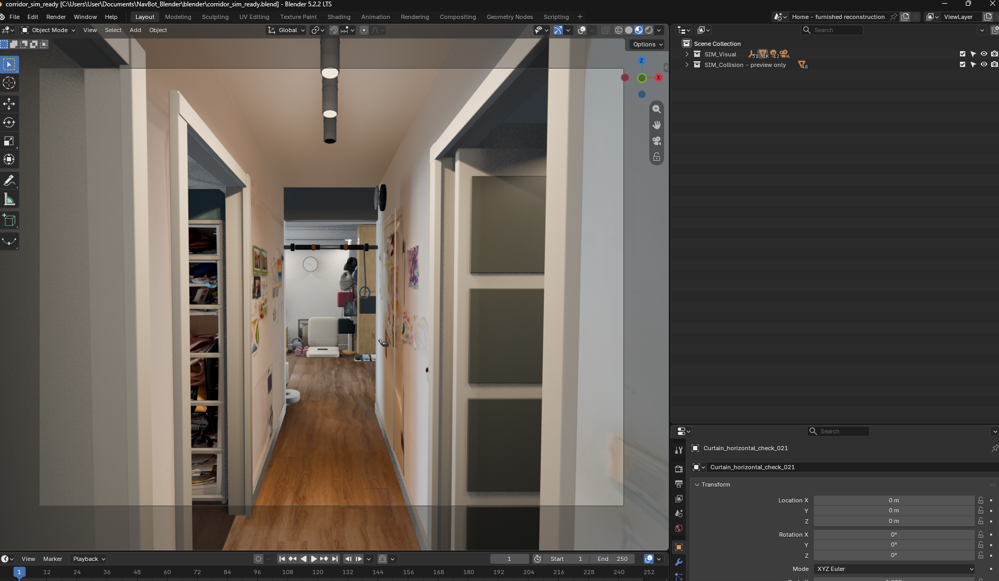
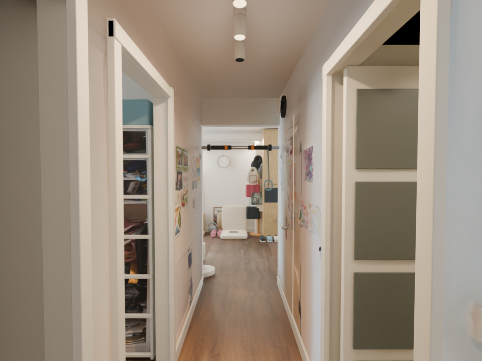
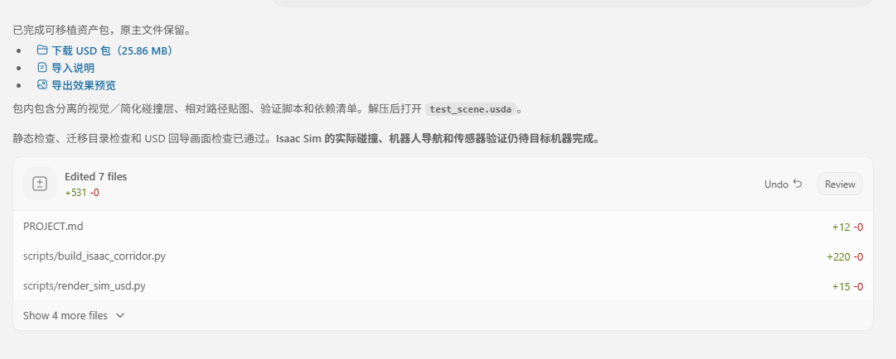

Validate the smallest experiment first
Use meters, Z-up and separate Visual/Collision layers. The cube has a gravity-enabled, non-kinematic rigid body and convex hull; the floor uses a static triangle mesh.
DEVLOG · 2026.09.23 · REALITY CAPTURE
Compare photographs, Scaniverse LiDAR and reconstruction of the same space. Test whether an AI agent can turn captured reality into editable assets for robotics simulation.

Left: Clean geometry with simple materials: clear structure, reduced visual detail. Center: The original Lidar scan, which was the closest to the scene, was marked by geometric noise, holes and invisible areas. Right: Clean surfaces with captured textures balance editability and real appearance.
01 / THE QUESTION
Scaniverse supplies scale, spatial relationships and an 8192×8192 texture, but also noise, broken boundaries, occlusion and baked lighting. Photos add visual cues without reliable depth. Combine both sources instead of asking either to solve the entire reconstruction.
02 / WORKFLOW
Organize 15 HEIC photos into JPGs and previews; identify corridors, openings, furniture, lights, frames and unseen regions. Photos guide appearance, not exact measurement.
Import the GLB with scan coordinates and metric scale. Sample triangle normals, centers and areas to fit walls, floor and ceiling. Corridor width at Y=0 is about 1.089 m; reconstructed clear height is about 2.60 m.
Hide the original scan in a Reference Collection and verify unchanged geometry, topology and UV hashes. Save architecture, photo-based and capture versions separately.
Build walls, openings, floor, ceiling, frames and skirting. The first architectural version has 22 new mesh components, 368 vertices and 324 quad faces. Inferred walls are separate and marked uncertain.
Perspective-correct photos and scan textures guide flooring and walls; restore lights, vents, decorations and furniture. The capture method records indirect diffuse appearance through camera rays, not fully relightable PBR materials.
Render simplified, raw-scan and texture-capture versions from the same view. Check finite coordinates, packed images, ceiling visibility and source hashes. Judge editability, reproducibility and exportability as well as appearance.
03 / EVIDENCE

Fit scan planes and inspect horizontal slices to locate walls and openings.

Photos restore furniture, decorations, materials and details missing from the scan.

Local repairs reduce holes and surface noise, but large unscanned areas cannot be considered by algorithms as known facts.
04 / GAUSSIAN SPLATTING TEST
Import all 525,679 Scaniverse Gaussian splats into Blender. Colors and atmosphere survive, but the narrow corridor, white walls, occlusion and exposure changes expose clear limitations.

The room is recognizable, but doorframes, corners, ceilings and picture edges show smearing, swelling and floaters.

The capture-aligned view is readable, but white-wall detail is soft and thin objects and occlusion boundaries are unstable.

Moving away from the capture viewpoint reveals haze, exposure contamination and broken appearance: limited viewpoint generalization.
It preserves lighting and color, but lacks explicit wall, door, floor and furniture components. Collision, semantics, physics materials and independent randomization are difficult to assign directly.
Provides metric scale, major planes and rough geometry, but also contains scan noise, holes, occlusion and complex triangulation.
Use LiDAR to constrain scale and spatial relationships, then rebuild clean, separate Blender components. Photos and scan textures guide materials and lighting.
05 / FINAL CONCLUSION
Separate walls, doors, floors, ceilings and furniture make editing, replacement, labeling and domain randomization easier.
Clean planes and clear topology are better suited to collision geometry, navigation and physics validation than scan noise or splats.
LiDAR constrains scale and spatial relationships; photos and captured textures help reproduce materials, colors and lighting.
Modular assets make it easier to add collision proxies, semantics and material parameters, then export to OpenUSD, Isaac Sim or other robotics platforms.
Reconstruction-stage limits (September 23): This is not a calibrated building survey or a fully validated simulation asset. Wall thicknesses, room depth, furniture and unseen regions include plausible reconstruction. It nevertheless provides clearer, more controllable structure than raw scans or splats.
06 / SIM-READY HANDOFF
Once navigation was the target, separate visual and collision models. Isaac Sim was not yet installed on September 23, so deliver a portable USD package, scripts, dependencies and import instructions rather than claiming runtime validation.
Navigation sets the priorities: scale, floors, walls, doorways, furniture collisions and clearance come before rendering effects.
Only import preparation was complete at that stage. Collisions, navigation, sensors and final materials still required validation after installing Isaac Sim.
Preserve the photo-based and Blender visual versions; create a separate Isaac Sim export.
Move the entire Sim-ready scene level or root node in a uniform manner, not just the ground, to avoid the furniture being suspended and collisions being misplaced.
Keep detailed visual meshes; use simple, stable collision proxies for walls, floors, doorways and furniture.
Bake complex shaders into portable Base Color, Roughness, Metallic and Normal textures.
Ship textures, USD layers and dependencies together using relative paths.
Record units, up axis, bounding box, component count and missing textures; validate physics and sensors later in Isaac Sim.
07 / PACKAGE GENERATED

Bake procedural materials, export visual USD, and package collision layers, test scenes, dependencies, manifests and validation scripts. Collision geometry preserves openings and furniture outlines while excluding tiny floor seams, decals and rug texture details.
OpenUSD 0.26.3 · 3 layers · 14 external assets · all relative references resolved
test_scene.usda → corridor.usda
├ visual.usdc
├ collision.usda
├ manifest.json
├ validate_asset.py
└ validate_in_isaac.pyState the limits clearly: Static checks passed for references, textures, units, meshes, collider bindings and 2D passage. Captured lighting uses emission, not fully relightable PBR. As of September 23, Isaac Sim was not installed, so floor contact, friction, wall raycasts, robot passage and RGB/LiDAR/depth remained untested.
08 / DELIVERY GATE
Three different checks: the Blender master organizes visual/collision groups; round-trip validates independent visual USD reopening; portable-package testing validates relocated dependencies. None substitutes for the others.

corridor_sim_ready.blend Keep the whole corridor look, and split it clearly in Outliner SIM_Visual and SIM_Collision - preview only . The visual group serves rendering and visual sensors; the collision group contains simplified proxies for doorways, walls, floors and furniture.

The exported visual.usdc Reimport and render in a separate Blender session to verify that visual geometry, texture paths and 1,020 material bindings work independently of the original .blend for a round-trip check; it does not validate collisions or robot dynamics.

The package includes visual/collision USD, relative-path textures, test scenes, import notes, dependencies and checksums. Static validation passed after moving the package; the Blender master was preserved.
Visual and Collision are organized independently in the Sim-ready Blender file to facilitate inspection and export separately.
Visual USD can be re-imported and rendered, confirming that the data are not only present in the source file.
Relocation checks passed: the package does not depend on absolute paths on the source computer.
Local rigid-body floor contact was tested on September 24; robot passage, RGB, depth and RTX LiDAR remained unverified at that stage.
09 / PHYSICS SANITY TEST · 2026.09.24
Run Isaac Sim 6.1.0 natively on Windows, import the Blender corridor USD and test gravity and floor contact with a cube: the first runtime environment check.
About 47 seconds of uncut simulator recording: inspect cube motion and floor contact, then try initial-velocity changes.
Use meters, Z-up and separate Visual/Collision layers. The cube has a gravity-enabled, non-kinematic rigid body and convex hull; the floor uses a static triangle mesh.
Select a location within the corridor where the cube can drop and park on the floor. Then try the initial speed and material setting, observe motion and contact. This proves that the basic physical interaction of the position is available.
The first drop penetrated the floor; a different corridor location worked. Collision coverage, alignment and initial height at the original point remain unresolved. This does not validate the entire floor.
Isaac Sim installation, room import and local rigid-body/collider checks are complete. Next investigate penetration, import NavBot URDF/meshes, and inspect links, joints, mass/inertia and collisions. Navigation, sensors, ROS2, Isaac Lab, RL and Gazebo comparisons remain unvalidated in this scene at this stage.
10 / PHYSICS MATERIAL · 2026.09.24
After floor contact, create and bind Cube_PhysicsMaterial and increase restitution. The green cube visibly bounces: the experiment moves from valid collision to adjusting contact behavior.
About 10 seconds of uncut simulator screen recording. The property panel also shows the material settings.
Create → Physics → Physics Material; enable Rigid Body Material and name it Cube_PhysicsMaterial.
Select Cube and bind the new material under Physics materials on selected models, keeping OmniPBR for appearance. The shader controls green color; the physics material controls friction and bounce.
Static Friction: 0.4
Dynamic Friction: 0.3
Restitution: 0.8
Friction Combine Mode: average
Restitution Combine Mode: max
Material binding and restitution changed post-contact motion. This is a qualitative demonstration, without rebound-height measurement or real-material calibration. The earlier penetration issue remains unresolved.
September 24 update: URDF import, flat-ground motion and local corridor collision checks completed. Penetration at the original drop point remains unresolved. Read about the robot corridor experiment.
Back to Development Log